Kahramanmaraş · 12 Yıldır Hizmetinizde
İMFA Yapı, layık olduğunuz yaşam alanları inşa eder — Kahramanmaraş'ta deprem sonrası yerinde dönüşümün güvenilir çözüm ortağı.
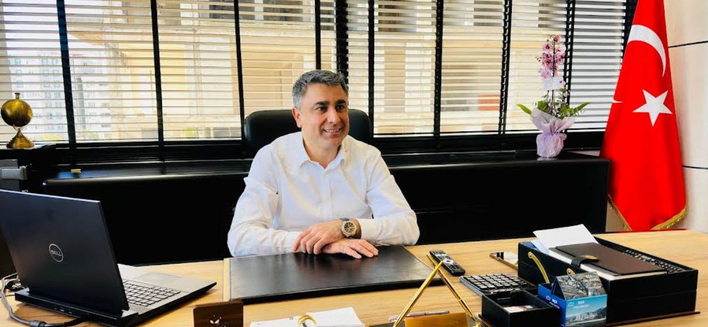
İMFA Yapı Yönetim Kurulu Başkanı
12 yıldır Kahramanmaraş'ta arsadan konuta anahtar teslim projeler üretiyoruz. Bugün önceliğimiz, depremin izlerini silecek güvenli ve kalıcı yaşam alanları kazandırmak.
Yerinde Dönüşüm
Kahramanmaraş'ta hasar gören binaları, hak sahipleriyle omuz omuza, güvenli ve zarif yaşam alanlarına dönüştürüyoruz.
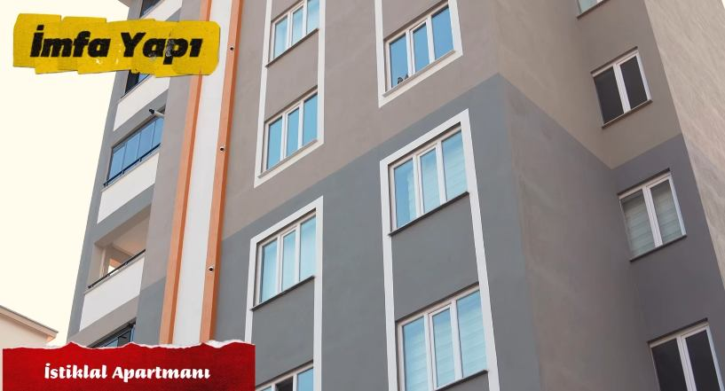
Eski, hasarlı bir yapının yerine inşa edilen İstiklal Apartmanı; modern cephesi ve özenli iç mekan detaylarıyla hak sahiplerine teslim edildi.
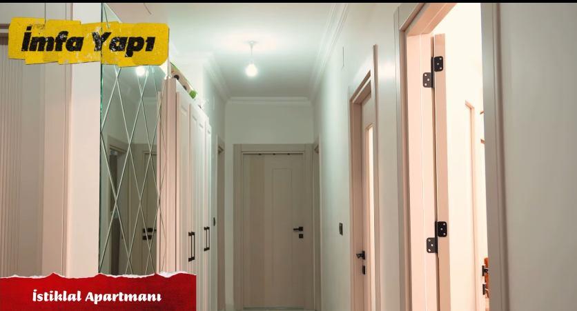
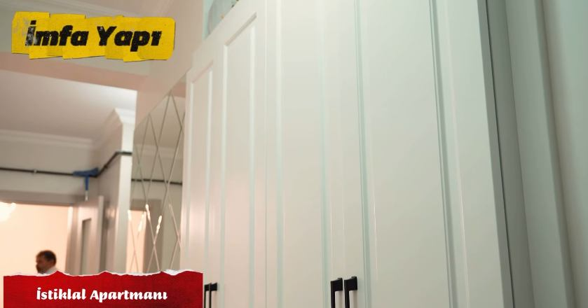
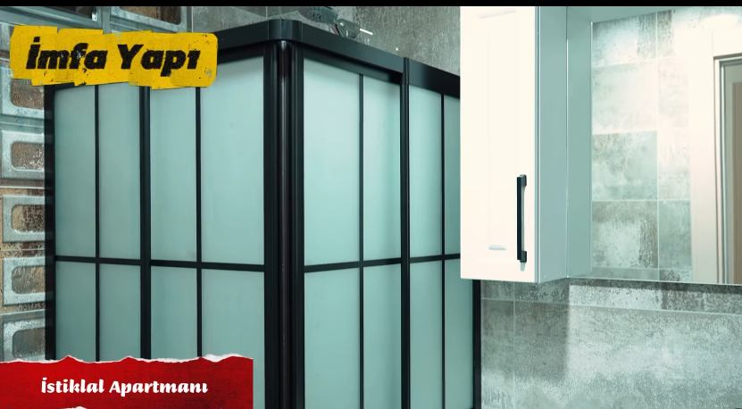
Kuzey Çevre Yolu üzerinde, Ka Yapı ile ortaklaşa hayata geçirdiğimiz İstinye Konutları tamamlandı. 7 blok, tamamı güney cepheli 152 daire ve 22 ticari ünite; kapalı otopark, hamam, sauna, tuz odası, yüzme havuzu, taziye evi ve çocuk oyun alanlarıyla eksiksiz bir yaşam alanı.
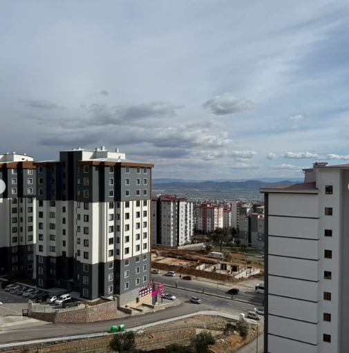
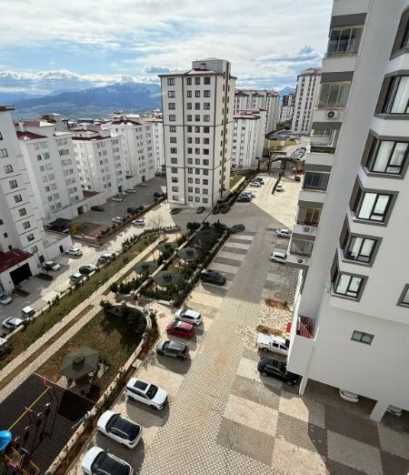
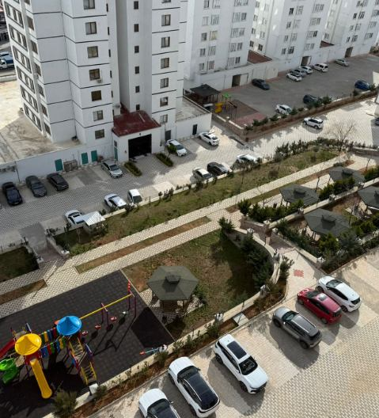
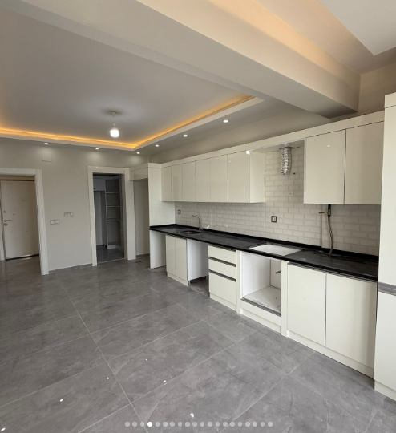
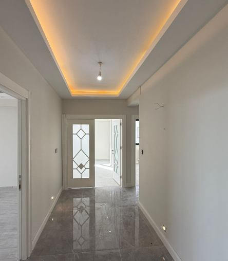
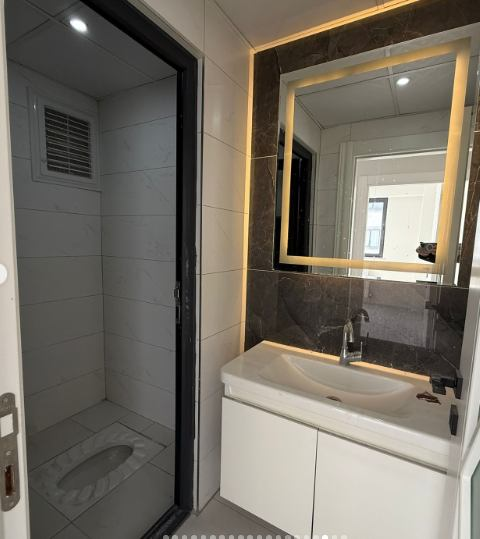
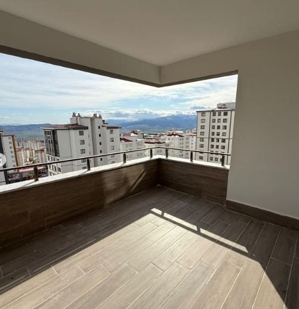
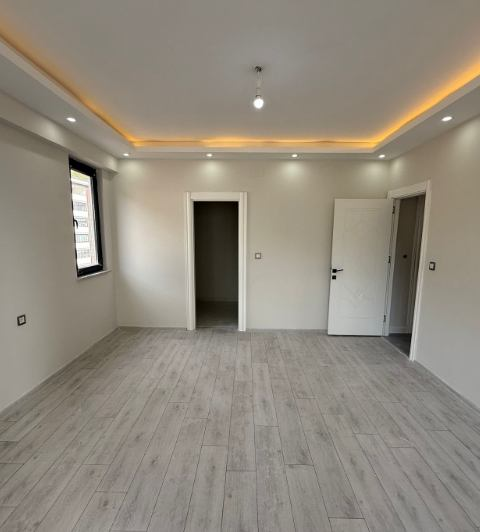
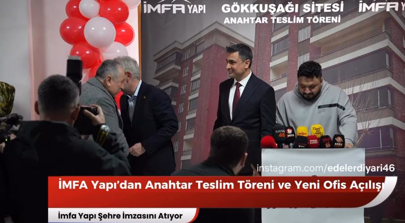
Anahtar teslim töreniyle hak sahiplerine devredildi.
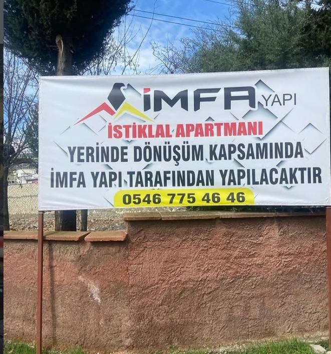
Yerinde dönüşüm kapsamında İMFA Yapı tarafından hayata geçirilecek.
Deprem sonrası şehrin farklı noktalarında 8 yerinde dönüşüm projesi yürütüyoruz.
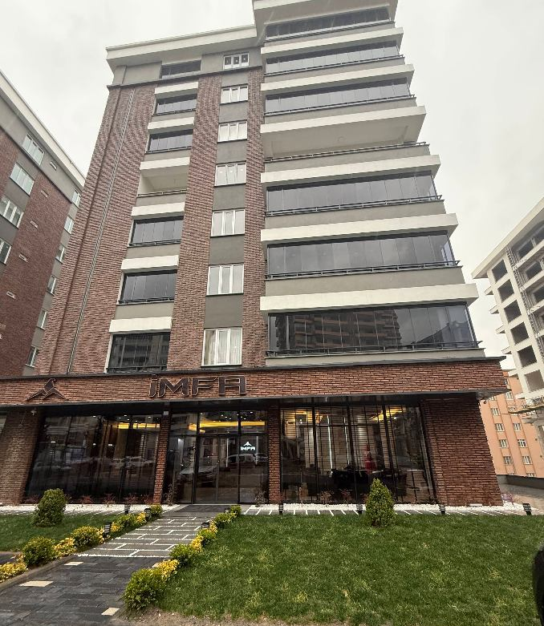
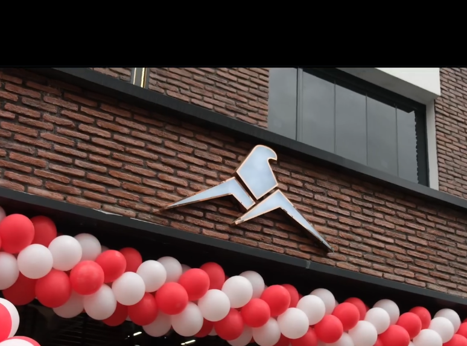
Kahramanmaraş'taki merkez binamızda projelerinizi yüz yüze konuşabilirsiniz.
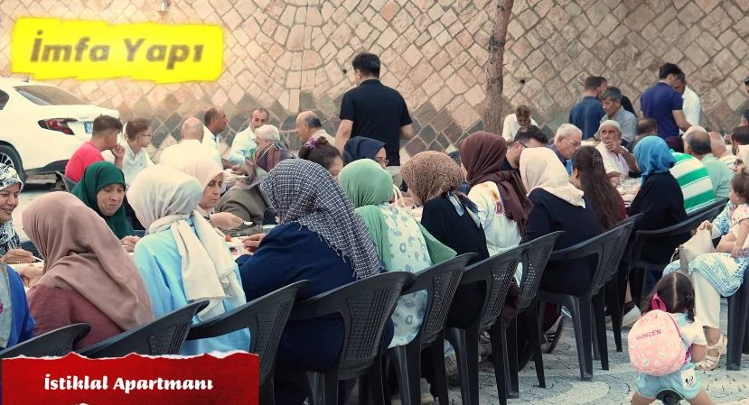
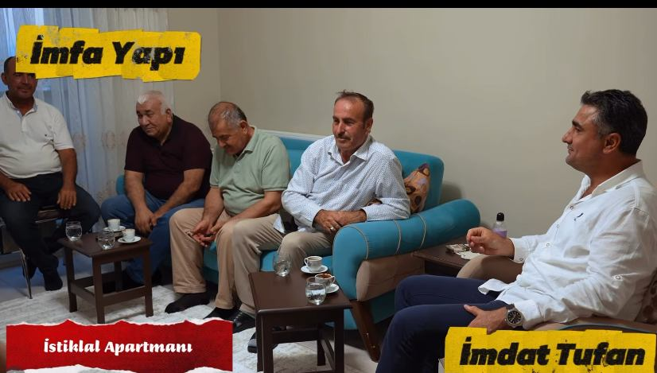
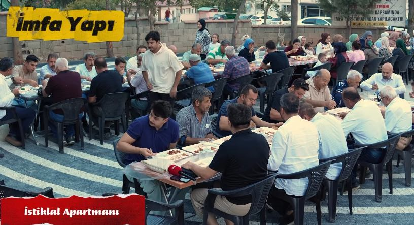
"İMFA Yapı layık olduğunuz yaşam alanları inşa eder." Her proje bir binadan fazlası — komşuluğun ve güvenin yeniden inşasıdır.
Basında Biz
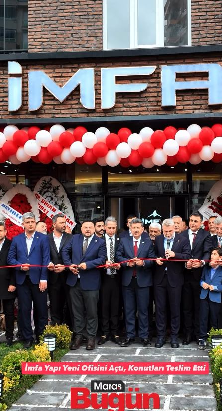
Maraş Bugün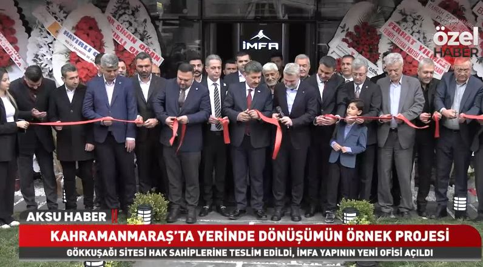
Aksu Haber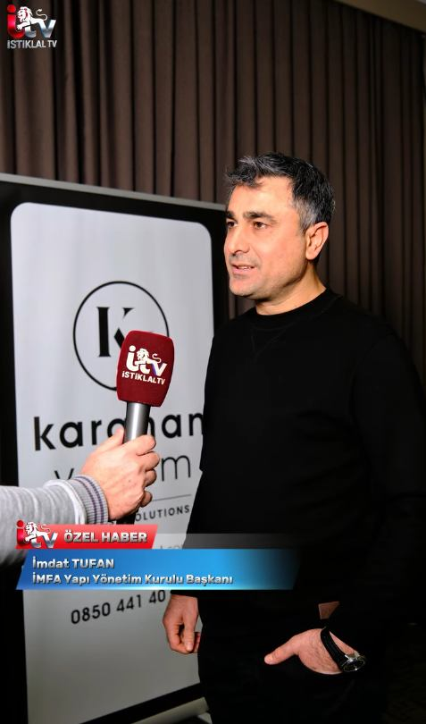
İstiklal TV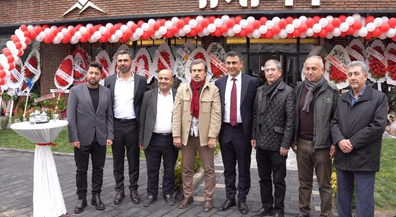
Aksu TV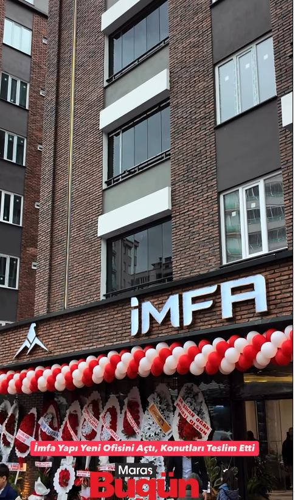
Maraş Bugün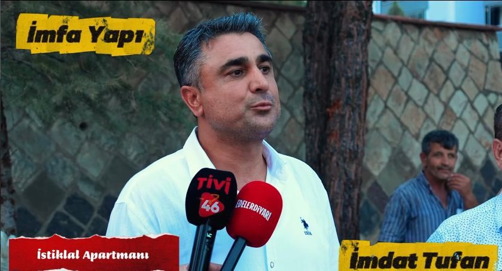
Tivi 46 / Edelerdiyarı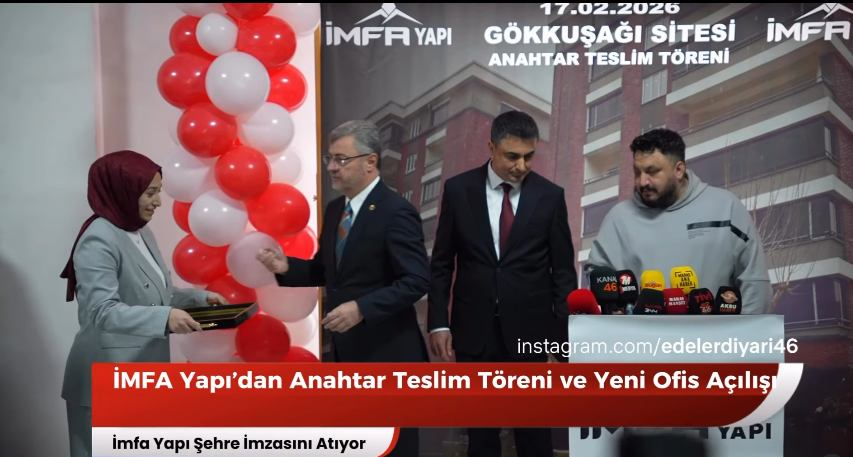
Anahtar Teslim Töreni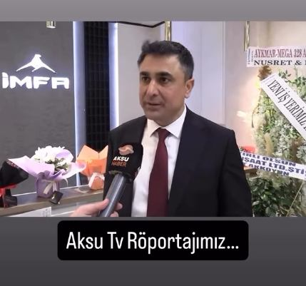
Açılış Töreni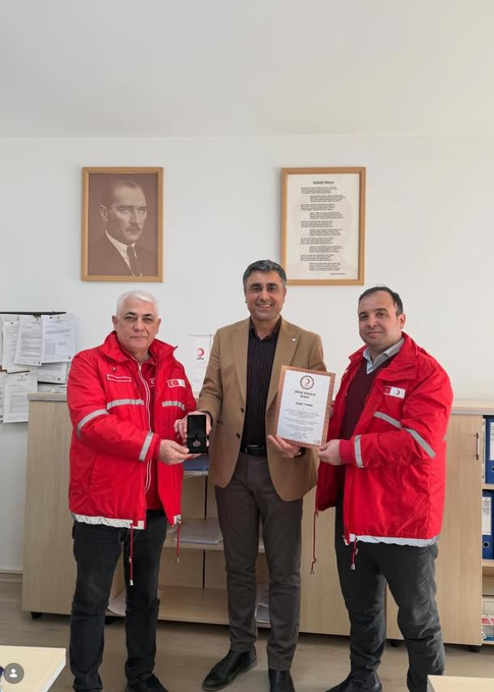
Toplumsal sorumluluk çalışmalarımız Kızılay tarafından takdir belgesiyle onurlandırıldı.
Hizmetlerimiz
Deprem riski taşıyan binaların yıkılıp, aynı arsa üzerinde hak sahipleriyle birlikte yeniden inşası.
Projelendirmeden teslimata kadar tüm süreçlerin tek çatı altında, şeffaf şekilde yönetilmesi.
Ofis, mağaza ve karma kullanımlı yapılarda mühendislik disiplini ve mimari estetik bir arada.
Güncel deprem yönetmeliğine tam uyumlu statik hesap ve mimari tasarım süreçleri.
İletişim
Yerinde dönüşüm veya yeni projeniz için bize ulaşın, size en kısa sürede dönüş yapalım.
Mimar Sinan, Bediüzzaman Blv., 46050
Kahramanmaraş Merkez / Kahramanmaraş
Randevu için bizi arayın